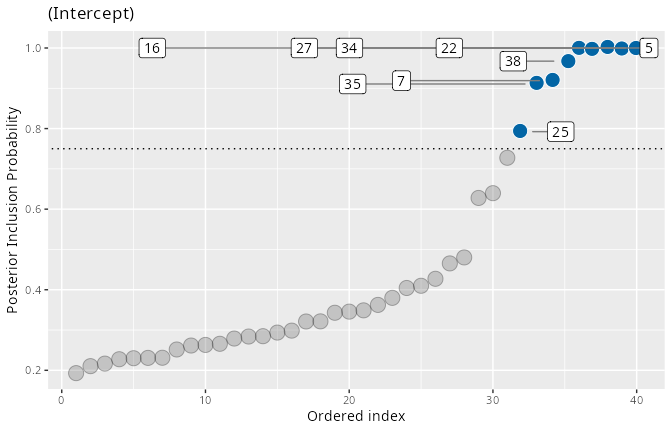
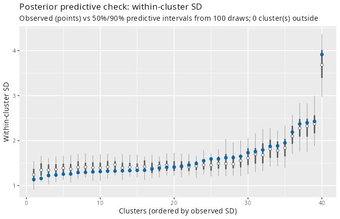
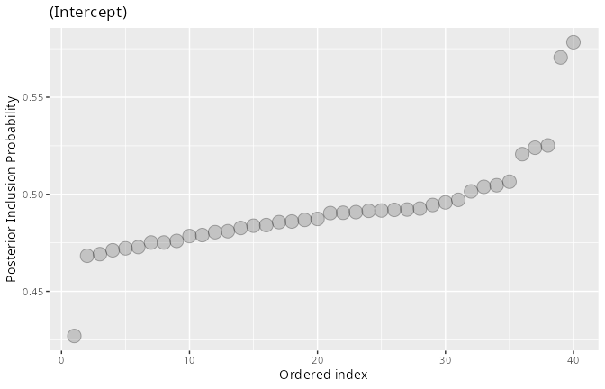

Convergence and robustness
Source:vignettes/convergence-and-robustness.Rmd
convergence-and-robustness.RmdTwo practical questions decide whether an ivd analysis
can be trusted:
- Has the sampler converged for the quantities that matter? The spike-and-slab indicators make some standard diagnostics misleading.
- Is the likelihood adequate? Heavy-tailed data can masquerade as variance heterogeneity, producing confidently wrong PIPs.
This vignette demonstrates both failure modes on simulated data – where we know the truth – and the tools that catch them.
Part 1: Convergence for spike-and-slab models
We reuse the simulation from
vignette("interpreting-pips", package = "ivd"): 40
clusters, of which 5, 13, 27 and 38 have a within-cluster SD 2.5 times
the baseline.
library(ivd)
sim <- simulate_ivd(J = 40, n_j = 50, deviant_clusters = c(5, 13, 27, 38),
deviant_factor = 2.5, seed = 123)What an underfitted run looks like
First a run that is deliberately far too short:
short <- ivd(y ~ 1 + (1 | id), ~ 1 + (1 | id), data = sim$data,
niter = 300, nburnin = 300, workers = 4, seed = 456)
#> Warning: Some R-hat values are greater than 1.10 -- increase warmup and/or
#> sampling iterations.
short
#> ...
#> Diagnostics: max split-Rhat = 26.861, min n_eff = 10The Rhat warning fires, but the more actionable diagnostic is
pip_diagnostics(): it checks the thing you will actually
report – the per-cluster classification – for agreement across
chains:
pip_diagnostics(short)
#> PIP Monte Carlo diagnostics (4 chains, classification at PIP >= 0.75)
#>
#> Max. MCSE of a PIP: 0.217
#> Max. between-chain PIP range: 0.877
#> 4 of 40 PIPs are classified inconsistently across chains (see below);
#> consider more iterations before classifying these clusters.
#>
#> scale_var cluster_id pip chain1 chain2 chain3 chain4 mcse range
#> (Intercept) 5 0.783 0.133 1 1 1.000 0.217 0.867
#> (Intercept) 13 0.792 0.170 1 1 0.997 0.207 0.830
#> (Intercept) 27 0.783 0.187 1 1 0.947 0.199 0.813
#> (Intercept) 38 0.743 0.123 1 1 0.847 0.210 0.877This is as bad as it gets, and the pooled numbers hide it: the pooled PIPs (~0.78) look like solid detections, but chain 1 assigns these clusters to the spike (PIP 0.12–0.19) while the other chains assign them to the slab with near certainty. (These are, in fact, exactly the four truly deviant clusters – chain 1 simply had not found the slab yet.) A pooled PIP of 0.78 built from chains that disagree this much is not evidence; it is an average over disagreement.
The same model, run properly
fit <- ivd(y ~ 1 + (1 | id), ~ 1 + (1 | id), data = sim$data,
niter = 2000, nburnin = 2000, workers = 4, seed = 456)
pip_diagnostics(fit)
#> PIP Monte Carlo diagnostics (4 chains, classification at PIP >= 0.75)
#>
#> Max. MCSE of a PIP: 0.036
#> Max. between-chain PIP range: 0.157
#> All 40 PIPs are classified consistently across chains.All four truly deviant clusters now sit at PIP 1.000 in every chain.
Two related notes:
-
Global Rhat can stay high even when the PIPs are
stable (this fit reports max split-Rhat 1.26). The worst Rhat
values belong to individual random-effect draws whose chains disagree
only while the corresponding inclusion indicator switches between spike
and slab – behaviour that is intrinsic to the model, not a sign of a
broken run. Judge the PIPs by
pip_diagnostics(), and judge the fixed effects and variance components by their own Rhat/n_eff rows insummary(). -
More chains are cheap. Chains are decoupled from
workers, and each worker compiles the model once and reuses it, so
ivd(..., chains = 8, workers = 4)costs extra sampling time but no extra compilation. More chains make the between-chain checks inpip_diagnostics()considerably sharper.
Part 2: Heavy tails masquerading as variance heterogeneity
The gaussian likelihood interprets every excess spread as variance. If the residuals are heavy-tailed, clusters that merely catch a few outliers can be flagged with total confidence. To demonstrate, we simulate data with student-t residuals (df = 3) and no deviant clusters at all:
sim_t <- simulate_ivd(J = 40, n_j = 50, n_deviant = 0,
family = "student", df = 3, seed = 321)The gaussian fit is confidently wrong
fit_g <- ivd(y ~ 1 + (1 | id), ~ 1 + (1 | id), data = sim_t$data,
niter = 1500, nburnin = 1500, workers = 4, seed = 99)
sum(pip(fit_g)$pip >= 0.75)
#> [1] 9
max(pip(fit_g)$pip)
#> [1] 1
plot(fit_g, type = "pip")
Nine of forty clusters – nearly a quarter – exceed the 0.75
threshold, some with PIP 1.000, in data where no cluster
deviates. Note that the gaussian fit’s own pp_check() does
not catch this: the model absorbs the tails into the cluster
variances, so its replicated within-cluster SDs match the observed
ones.
pp_check(fit_g, ndraws = 100, seed = 1)
The student-t fit absorbs the tails
family = "student" replaces the gaussian likelihood with
a student-t whose degrees of freedom nu are estimated from
the data:
fit_t <- ivd(y ~ 1 + (1 | id), ~ 1 + (1 | id), data = sim_t$data,
niter = 1500, nburnin = 1500, workers = 4, seed = 99,
family = "student")
sum(pip(fit_t)$pip >= 0.75)
#> [1] 0
max(pip(fit_t)$pip)
#> [1] 0.578
plot(fit_t, type = "pip")
Every false detection disappears, and the tail-heaviness is recovered
where it belongs – in nu:
summary(fit_t)$table["nu", ]
#> Mean SD Time-series SE 2.5% 50% 97.5% n_eff R-hat
#> nu 3.31 0.251 0.01 2.86 3.3 3.81 417 1The estimate brackets the true df of 3 tightly.
Deciding between the two likelihoods
Since the gaussian fit’s SD-based pp_check() looks
clean, compare the families on predictive grounds: WAIC.
The student-t model wins by a wide margin (~520 WAIC units). The practical rule:
- fit both families when heavy tails are plausible;
- if WAIC clearly prefers
"student"and the PIPs collapse whilenucomes out small (say below 10), the “variance heterogeneity” was tails; - if
nuis estimated large (30+) and the PIPs barely move, the gaussian fit is fine – the t nests it.
Two caveats worth knowing: the student-t scale model describes the
scale tau of the t distribution (its SD is
tau * sqrt(nu/(nu-2)); plots label the axis accordingly),
and student fits typically need more iterations than gaussian ones to
mix – confirm with pip_diagnostics() before
interpreting.
Checklist
-
print(fit): sane max split-Rhat / min n_eff for the model as a whole. -
pip_diagnostics(fit): nounstableclassifications; small MCSEs. -
pp_check(fit): observed within-cluster SDs inside their predictive intervals. - If tails are plausible: refit with
family = "student"and compare WAIC and PIPs. - Underpowered or undecided? Increase
niter/nburnin, or add chains (chains > workerscosts no extra compilation).